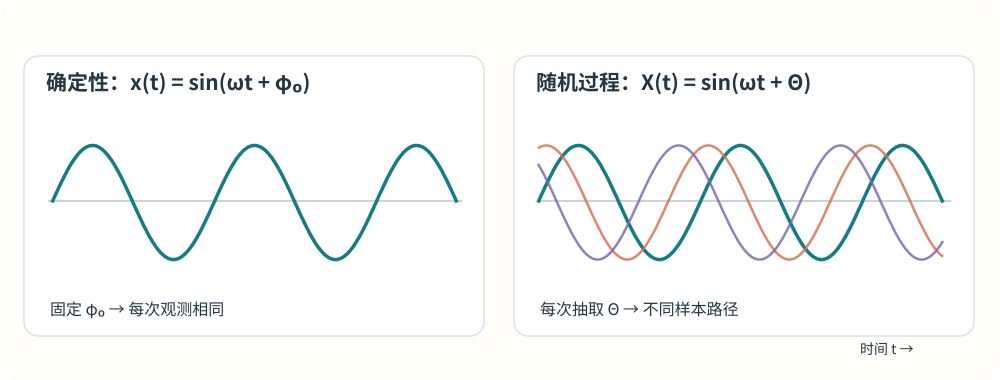
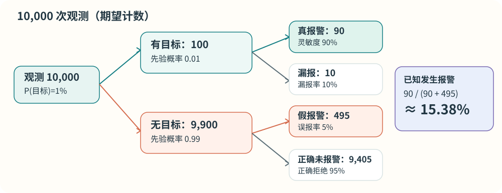
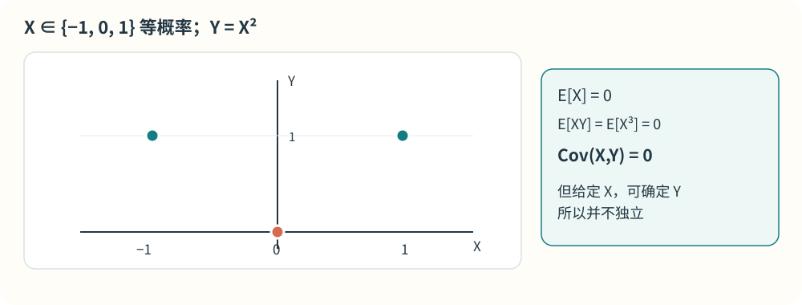

CHAPTER 01 · 概率基础
从确定性到随机性：概率论回顾
当信号的每一次观测不同，哪些规律仍然可以准确计算？从随机相位的直觉，走到条件概率、贝叶斯更新与独立性的边界。
- 说清随机实验、事件、样本路径与概率测度各自扮演的角色
- 正确构造条件概率和低基准率下的贝叶斯检测模型
- 用反例证明“零相关不等于独立”并检查前提
为什么同一个信号，每次测量都不同？
一台稳定的振荡器可能输出近似正弦波，但接收端开始采样时未必知道它的初始相位。设角频率 ω 已知，初始相位 Θ 在不同实验中随机变化。一次实验观察到的是一条确定的曲线；对所有可能的实验进行描述，才构成随机过程。

若 Θ 在 [0,2π) 上均匀分布且 A 为常数，那么固定时刻的均值为 0，均方值为 A²/2。观测者无法断言下一次实验的起始相位，但可以准确描述这些统计量。这是随机信号分析的核心转变：从预测每次取值，转向计算稳定的统计规律。
区分两个层次：「样本路径」指给定一次随机结果之后随时间变化的函数；「随机过程」指所有可能样本路径的集合及其概率规律。平稳性、自相关和频谱会在第 06–09 章系统展开。
概率空间：先说清楚“什么可能发生”
随机实验不是随意给结果附一个百分数。严谨模型由三部分组成：样本空间 Ω 列出基本结果；事件集合 ℱ 指定我们能讨论的事件；概率测度 P 为事件赋值并满足公理。
| 符号 | 角色 | 抛两次公平硬币的例子 |
|---|---|---|
| Ω | 所有可能基本结果 | {HH, HT, TH, TT} |
| ℱ | 允许测量概率的事件集合（σ-代数） | 有限样本空间可取全部子集 |
| P | 满足公理的概率测度 | 每个基本结果概率 1/4 |
令 A 表示“至少出现一次正面”，则 A={HH,HT,TH}，所以 P(A)=3/4。令 B 表示“第一次为正面”，B={HH,HT}，则 P(B)=1/2。事件是样本空间的子集，其概率来自所包含的基本结果，而不是事件名称。
三条公理能推出什么？
概率非负、全空间概率为 1、对两两互斥的可数事件可加。这些条件立即给出 P(∅)=0、补集公式 P(Aᶜ)=1−P(A)，以及一般的两事件容斥公式。
在硬币例子中，A∩B=B，因此 P(A∪B)=3/4。若直接把 3/4 和 1/2 相加，便会把交集重复计算。
条件概率：观测会改变样本空间的权重
如果已经知道 B 发生，那么“在所有实验中 A 发生的比例”不再是目标；我们要看落在 B 内的实验里，有多少还同时落在 A。当 P(B)>0 时，条件概率定义为：
对前面的硬币例子，P(A|B)=1：已知第一枚硬币为正面，则“至少出现一次正面”是必然事件。反过来 P(B|A)=2/3；条件的方向不能互换。
全概率与贝叶斯更新
若互斥且完备的情形 B₁,…,Bₙ 覆盖 Ω，则先对情形求加权平均得到 P(A)，再用贝叶斯公式反求某个情形在观察到 A 后的概率。
假设雷达的目标出现先验概率为 1%，目标存在时的检出率为 90%，没有目标时的误报率为 5%。把 10,000 次观测当作期望计数的直观标尺，可以分出 90 次真报警和 495 次假报警。因此，在已经报警的条件下，真正有目标的概率仅为 90/585≈15.38%。这不是雷达“只有 15% 准确率”，而是低基准率与误报共同作用的结果。

保持检出率 90%、误报率 5% 不变，仅改变先验概率。
报警后有目标的概率：
工程决策边界：该演算假设检出率、误报率对相关条件是已知且稳定的。真实部署中这些量会随目标类型、环境和门限变化；若只修改先验而忽略分布漂移，计算结果可能失真。
独立、不相关与“看上去没关系”
两个事件 A、B 独立指 P(A∩B)=P(A)P(B)。对随机变量 X、Y，独立性要求它们的联合分布可分解为两个边缘分布的乘积；这远比一个相关系数恰好等于 0 更强。
取 X 在 −1、0、1 三个值上等概率分布，令 Y=X²。因为 E[X]=0、E[XY]=E[X³]=0，所以 Cov(X,Y)=0。但只要知道 X，Y 的值便完全确定：二者明显并不独立。

当二阶矩存在时，独立蕴含零协方差，但逆命题一般不成立。一个重要的特殊情形是联合高斯的随机向量：其中零协方差可推出独立；第 03 章会解释为什么必须强调“联合”二字。
用 10 行 Python 验证，而不是背结论
下面的示例完全使用标准库，不进行随机抽样，而是直接穷举定义中的概率和期望，运行结果是确定的。仓库中的 examples/test_intro_math.py 还包含自动化断言。
prior, detect, false_alarm = 0.01, 0.90, 0.05
posterior = detect * prior / (detect * prior + false_alarm * (1-prior))
print(f"报警后确有目标: {posterior:.4%}") # 15.3846%
xs = [-1, 0, 1]
ys = [x*x for x in xs]
ex = sum(xs)/3
ey = sum(ys)/3
cov = sum((x-ex)*(y-ey) for x,y in zip(xs,ys))/3
assert abs(cov) < 1e-12
assert ys == [1,0,1] # Y 依赖 X
独立练习：若先验概率变为 10%，检出率与误报率不变，试先预测后验会增大还是减小，再用页面滑块核对。进一步想：提高检出率和降低误报率，哪一项更有效，是否依赖先验？
把概率模型带往下一章
到这里，概率模型中已有基本结果、事件及其概率，也知道如何利用新证据更新判断。但直接处理“HH、HT、TH、TT”等文本样本并不适合微积分。下一章将定义随机变量 X:Ω→ℝ，把实验结果映射到数值，再用 CDF、PMF 与 PDF 连接概率和积分。
自检：P(A|B) 和 P(B|A) 是否通常相同？
不相同。它们分别以 B 和 A 作为条件，分母不同。只有在某些特定概率结构下才会相等。
自检：Cov(X,Y)=0 是否足够推出独立？
通常不够。例子 Y=X² 就有零协方差但强依赖；联合高斯是重要的额外条件。
延伸阅读与核查依据
- MIT OpenCourseWare · Introduction to Probability：条件概率、全概率与贝叶斯公式的原始课程材料。
- MIT 6.041SC · Conditioning and Bayes’ Rule：工程情形下如何组织条件事件。
- Penn State STAT 414 · Bivariate Normal Distributions：联合正态与零相关独立性的适用条件。